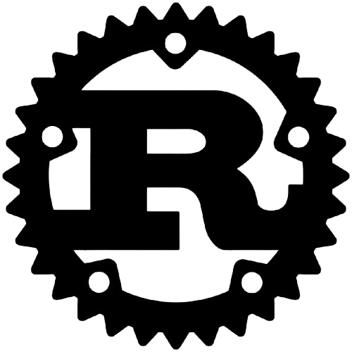
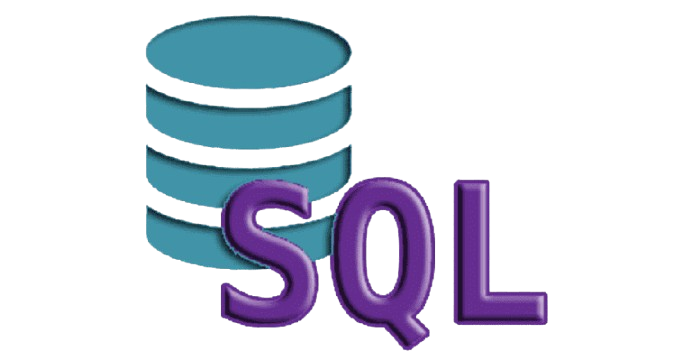

Áreas em que as linguagens de programação se destacam
As linguagens de programação dominam várias áreas da tecnologia. JavaScript e HTML são chave na web, Python lidera em inteligência artificial e dados, Java e Swift no mobile, C++ e C# nos games, e SQL nos bancos de dados. Cada linguagem tem seu espaço, dependendo da aplicação.
Python

Python é uma linguagem de programação de alto nível que serve para criar programas, automatizar tarefas, analisar dados, entre outros. É uma linguagem popular, versátil e de fácil aprendizado
Java
.png )
Java é uma linguagem de programação orientada a objetos, multiplataforma, rápida, segura e confiável. É utilizada para criar aplicativos, sistemas operacionais, software empresarial e muito mais.
JavaScript

JavaScript é uma linguagem de programação que permite a você implementar itens complexos em páginas web — toda vez que uma página da web faz mais do que simplesmente mostrar a você informação estática — mostrando conteúdo que se atualiza em um intervalo de tempo, mapas interativos ou gráficos 2D/3D animados, etc.
C++

C++ é uma linguagem de programação de alto nível, usada para criar programas de computador. É uma das linguagens de programação mais populares e versáteis.
C#
C# é uma linguagem de programação multiparadigma, desenvolvida pela Microsoft. É uma linguagem de tipagem forte, orientada a objetos e é parte da plataforma .NET.
PHP
O PHP (um acrônimo recursivo para PHP: Hypertext Preprocessor) é uma linguagem de script open source de uso geral, muito utilizada, e especialmente adequada para o desenvolvimento web e que pode ser embutida dentro do HTML.
TypeScript
.png)
TypeScript estende o suporte do JavaScript para programação orientada a objetos com suporte para seus próprios tipos personalizados, bem como melhorias em classes, interfaces e herança. A construção de seus próprios tipos de objeto e interfaces permite modelar seus dados em TypeScript para garantir que seus dados sejam processados e armazenados corretamente.
Golang
Golang se destaca em termos de desempenho por ser uma linguagem compilada que gera código de máquina eficiente. Sua tipagem estática e suporte integrado à concorrência por meio de goroutines contribuem para tempos de execução mais rápidos, tornando-a ideal para aplicações de alto desempenho.
Rust
Está sendo usado em diversas áreas como desenvolvimento web, programação de rede, programação de sistemas, desenvolvimento de jogos e backends de ciência de dados. Empresas como Facebook, Discord e Amazon estão implementando Rust para aprimorar seus sistemas de software e melhorar a segurança.
SQL
A Linguagem de consulta estruturada (SQL) é uma linguagem padrão para criação e manipulação de bancos de dados. O MySQL é um programa de banco de dados relacional que usa consultas SQL. Enquanto os comandos SQL são definidos por padrões internacionais, o software MySQL passa por atualizações e melhorias contínuas.